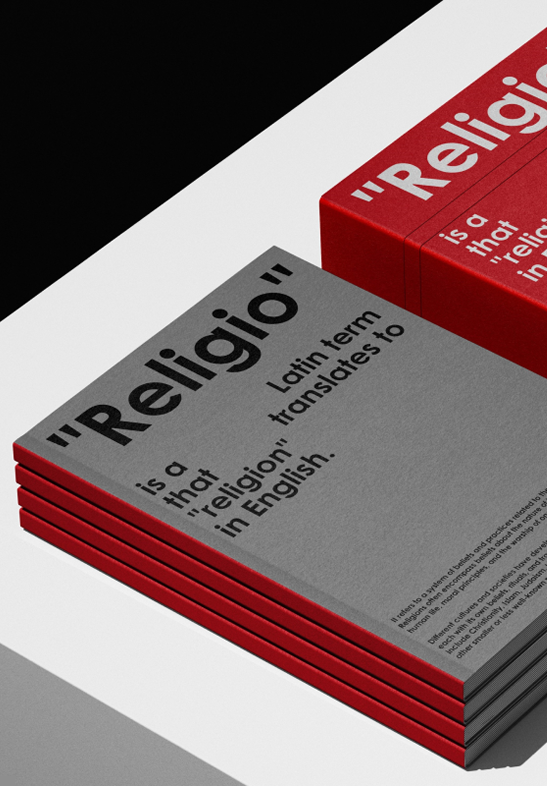
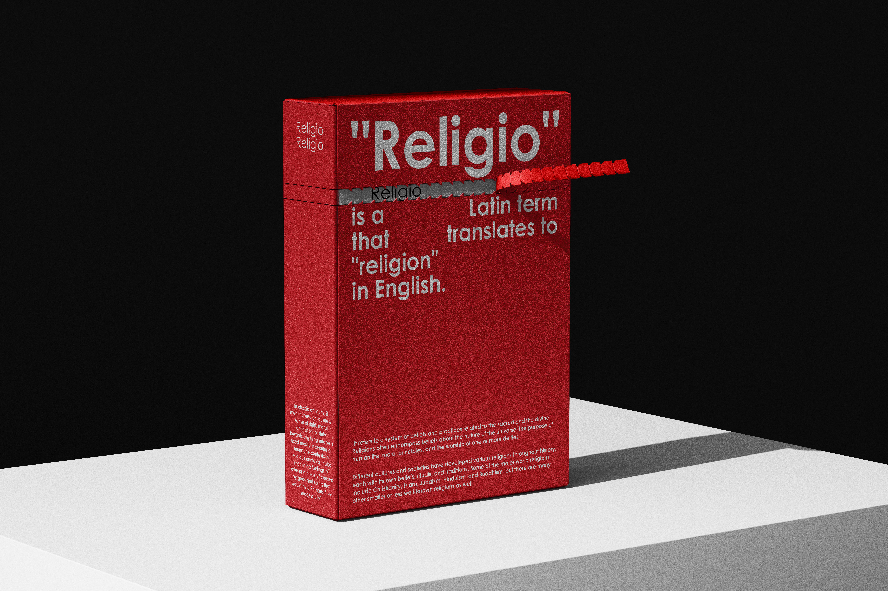
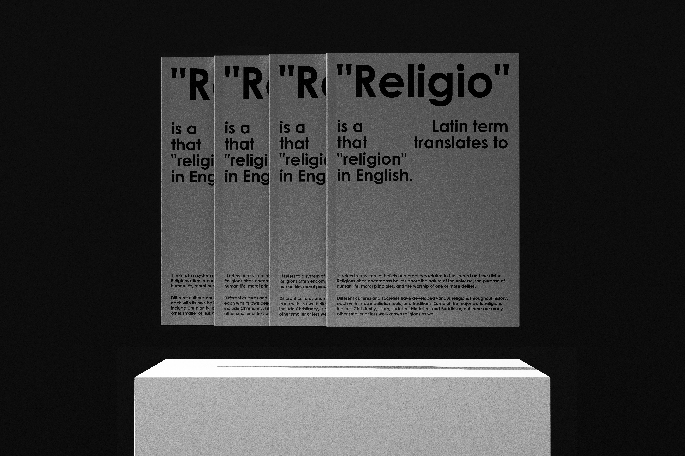

Symbol
The mark treats contrast as structure, using a compact shape language that can scale from badge to poster.
A graphic identity exploration built around ritual, contrast, and a quiet system of repeated visual signals.

The mark treats contrast as structure, using a compact shape language that can scale from badge to poster.
Repeating blocks, cropped forms, and deliberate spacing create a system that feels ceremonial without becoming heavy.
The visual tone keeps the project sharp and restrained, balancing belief, mystery, and modern graphic clarity.



